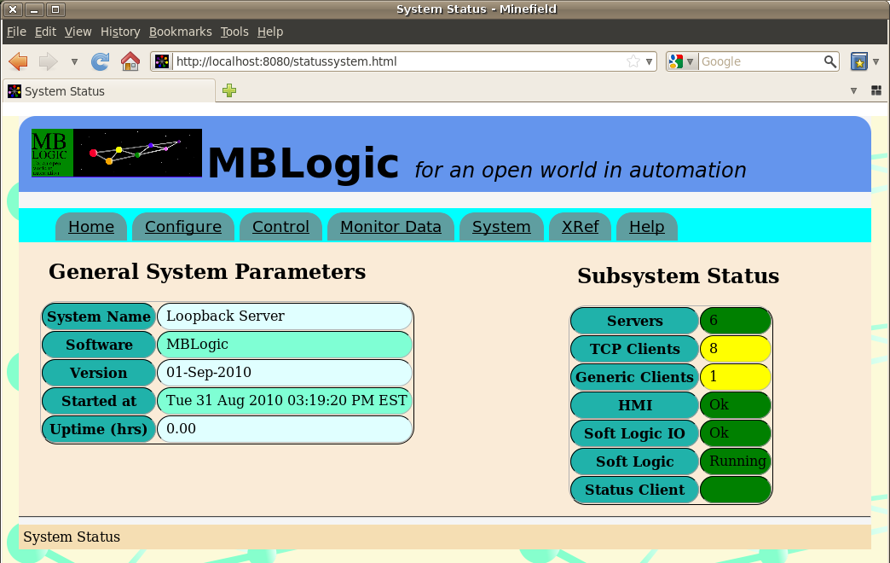
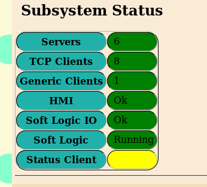
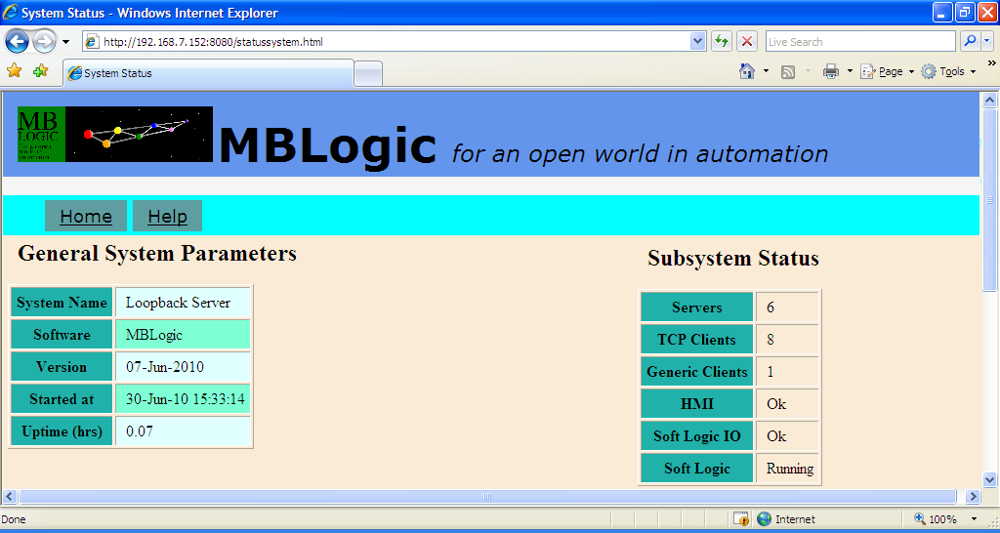

MBLogic
for an open world in automation
MBLogic
for an open world in automation
Help - System Status
Overview
The "System Status" page provides you with a quick overview of the current status of the software system. This page will automatically continuously update itself with the current status of the system.

General System Parameters
The General System Parameters displays the name and version of the application software, and also how long the system has been running since its last restart.
- System Name - This is the name of the system as set in the system configuration file.
- Software - This is the name of this application software package. This cannot be changed except by editing the source code and
- Version - This is the version number of the application software.
- Started at - This is the date and time at which the system was started.
- Uptime (hrs) - This is the time (in hours) since the system was last started.
Subsystem Status
Subsystem Status shows the current status of each of the major subsystems. As well as a textual indication, each of the subsystems is colour coded for quick reference. The colour codes used can be changed by editing the web page CSS, but the default values used are:
Colour Codes
- Green - OK - No problems are evident and everything appears to be running normally.
- Yellow - Alert - An error may have occurred when attempting to load a new version of a configuration or soft logic program. This may result in a fault if the system is restarted.
- Red - Fault - A major problem has been detected and should be corrected.
Monitored Subsystems
The following subsystems are being monitored.
- Servers - The number of communications servers active.
- Clients - The status of all of the communications clients.
- Soft Logic - The status of the soft logic system.
- Soft Logic IO - Whether any problems were detected in the soft logic IO configuration.
- HMI - Whether any problems were detected in the HMI configuration.
Browser Watchdog
The status page runs a watchdog timer which tracks whether it is able to contact the main system status server. The result of this is displayed as "Status Client". When the status client (web browser) is able to poll the status server, the result will be displayed as OK (green, under the default the colour configuration). If the watchdog timer has timed out, the result will be displayed as "alert" (yellow, under the default the colour configuration).

Static Web Status Page
Some web browsers are based on older internet technologies and are not capable of all the features used by the status monitoring system. Microsoft Internet Explorer is the best known of these older browsers. When a web browser asks for the system status page, the system looks at the request headers to see what type of web browser is being used. If Microsoft Internet Explorer (any version) is detected, the system automatically redirects it to a special status web page which uses only static data. This static web page does not update automatically. You will need to reload the page (press "F5") to update the page with new data. The only menu options available will be the summary page ("Home") and the help pages.

Web browsers which are based on modern standards will work with all features of the status interface. This includes virtually all other web browsers other than Microsoft Internet Explorer. Firefox, Google Chrome, Opera, Apple Safari, Epiphany, and most others should work with all features. Using any of these modern web browsers is strongly recommended.